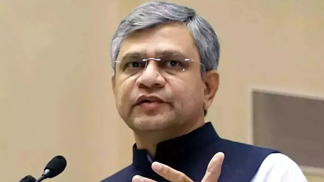

Electronic Chips are in need as the Oil are, said Ashwini Vaishnaw

Source: Economic Times
It is the digital world where users are acquiring the digital content and Hardware at the same rate as they forage for basic needs. Now it is even revealed by Ashwini Vaishnaw, the Minister of Electronics and IT. He straightly said the need for electronic Chips is as crucial as the oils for both strategic and commercial reasons. Further, he added that in the upcoming time, India would be in need to set up the 10 Semiconductor Fabrication Plants. For which the discussion is already on go in between the industries and government. The Minister of Electronics and IT was not well convinced by the statement of the Former RBI Governor Raghuram Rajan said India shouldn’t manufacture Electronic Chips.
TSMC, Intel, and Samsung along with many other capable companies already have sent their proposal to the government for setting up the fabrication centers. These proposals are in evaluation and soon will reach the final discussions.
As per the minister of Electronics and IT, Ashwini Vaishnaw, the $10 Billion package with 20 years of a roadmap is the first move of ours into this course. The industry still looks at India for a market in semiconductor fabrication. He focused on the need to give attention to the semiconductor sector along with many more. Like our own 5G technology, defense materials, semiconductors, permanent magnets, and railway. The minister of Electronics and IT also added that they have got clear approval from the PM, Narendra Modi for the same.
The minister was also asked about the clarity of the data protection bill and he said soon very good clarity will come on that.
This article is based on the interview taken by Economic Time’s Surabhi Agarwal; you can reach out to this interview directly from
Here.